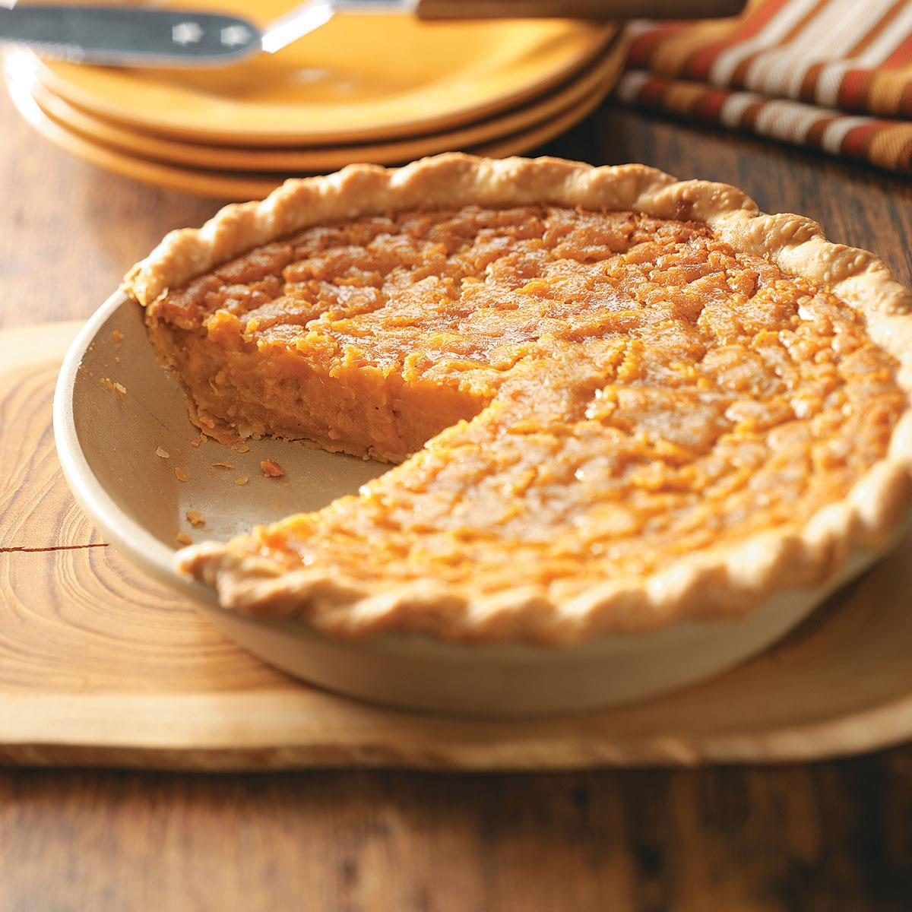

Sweet Potato Pie

Description
This is a recipe I learned from my grandmother. It's sweet and has a lighter texture than most sweet potato pies.
Sweet potato pies are the perfect desert for the holidays.
Ingredients
- 2 sweet potatoes
- 1/2 a can of sweet condensed milk
- 2 cups of sugar
- 1/2 cup of melted pure butter
- 2 eggs
- 3 tablespoons of flour
- 2 teaspoons of vanilla extract
- 3 teaspoons of nutmeg
- 2 teaspoons of allspice
- 1 unbaked deep dish pie crust
Steps
- Boil the sweet potatoes for 25 minutes. If you can easily poke a fork through them they are done.
- Peel the potatoes and mash them with a pototo masher or mixer.
- Add the mashed potatoes, milk, sugar, butter, eggs, flour, vanilla, nutmeg, and allspice together in a bowl and mix them with a mixer.
- Add the mixture to the pie crust.
- Bake the pie in a preheated oven for 45 to 50 minutes or until the crust is brown.
- Enjoy your delicious pie!